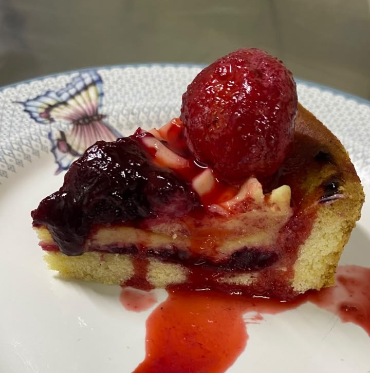
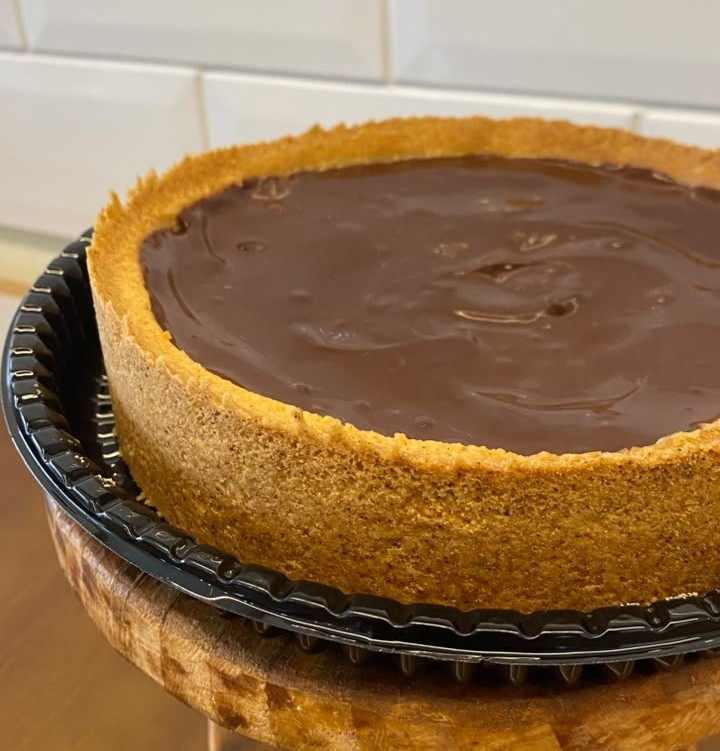
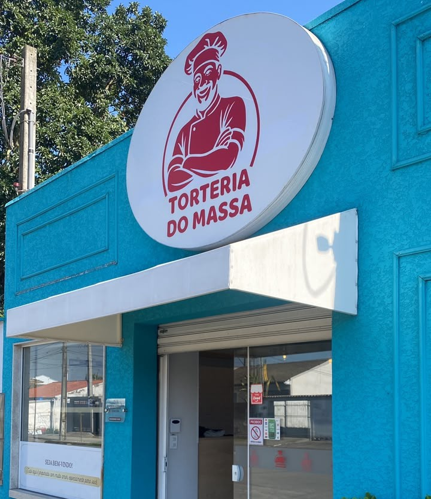

Uma história que começou num caderno esquecido na gaveta
Rola a página e acompanhe os ingredientes dessa trajetória, com um pouco de farinha, coragem e muito amor.
Há anos, o pai da família seguia a rotina de um emprego que pagava as contas, mas não acendia a chama por dentro. Entre uma demanda e outra, faltava tempo para o que realmente importava: estar perto de quem ama e cozinhar sem pressa.
Ao deixar aquele caminho, ele arrumou a casa, e foi aí que o destino brincou com ele: entre papéis antigos, apareceu um caderno de receitas rabiscado por ele mesmo, há mais de dez anos. Páginas amareladas, cheiro de memória e ideias que nunca tinham tido vez de brilhar.

Em vez de guardar de novo, ele decidiu aperfeiçoar cada receita: testar massas, ajustar recheios, ouvir crítica da família na hora do café e rir quando o forno quase não aguentava tantos experimentos.

As primeiras tortas saíram para vizinhos e amigos. A notícia se espalhou, e o que era um gesto de carinho virou fila na porta. O sucesso na cidade foi estrondoso: encomendas, indicações, sorrisos de volta e a certeza de que aquele caderno sempre tinha sido o mapa do caminho certo.
Hoje a Torteria do Massa cresce a cada dia, ainda com a alma de cozinha de casa, só que agora com uma mesa maior para dividir com você.

Obrigado por fazer parte dessa história
Cada pedido ajuda uma família a continuar escrevendo novas páginas, agora com cheirinho de torta fresca.
Ver produtos